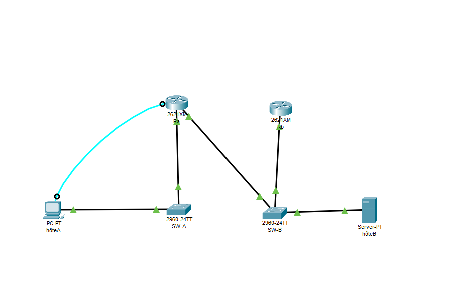
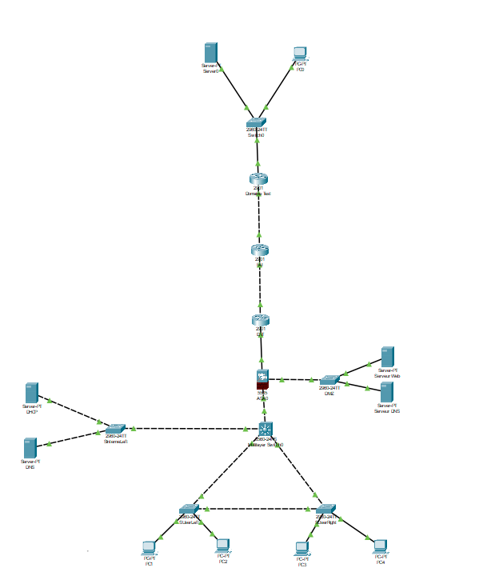

Je m'appelle Tristan BIZOT, 19 ans.
Actuellement, étudiant en première année du BUT Réseaux & Télécommunications à l'IUT Nice Côte d'Azur.
J'ai effectué toute ma scolarité à Monaco. Après une première et une terminale STI2D au Lycée Albert Ier de Monaco, j'ai obtenu mon BAC STI2D en 2024 avec la mention assez bien.
Je continue mon parcours universitaire en étude supérieur par le biais du BUT Réseaux et Télécommunications à l'IUT Nice Côte d'Azur.
Cette première année de formation m'a conforté dans mon choix et m'a permis d'acquérir des compétences dans le domaine de l'informatique, la télécommunication.
Mon projet pour la suite de ce cursus serait de me spécialiser en cybersécurité.
Langues parlées
Français : langue maternelle
Anglais : B1
Italien : B1
Mes centres d'intérêts
Retro Gaming : Amateur de consoles et jeux vidéos modernes, je suis également attiré par les anciennes consoles et les jeux classiques.
Histoire : Passionné par l'histoire ancienne et moderne, j'aime rechercher des informations et regarder des reportages sur les événements historiques via le web.
Cinéma : Grand fan de la saga Star Wars, j'apprécie également une variété de genres cinématographiques.
Objectif professionnel
Étudiant en première année de BUT Réseaux et Télécommunications, je suis attiré par les technologies de l'information et des communications.
Mon objectif est de développer mes compétences en configuration, gestion des réseaux, ainsi qu'en développement web avec le désir de m'orienter en deuxième année
en cybersécurité.
Mes compétences
Dans cette rubrique, vous trouverez certaines des compétences que j'ai pu acquérir dans le domaine des réseaux et Télécommunications, durant ma première année de BUT R&T :
Configuration et gestion des réseaux (Cisco)
Connaissance des systèmes d'exploitation et virtualisation (Linux, VirtualBox)
Développement web (HTML5, CSS3, JavaScript, SQL)
Maitrise des bases de la programmation (Python, Java, C)
Utilisation des logiciels de bureau (Word, Excel, PowerPoint)
Initiation aux bases de données avec SQL
Télécommunications (fibre optique et téléphonie)
Gestion de projet
Travail en équipe
Esprit d’analyse et résolution de problèmes
Communication (Présentation orale et écrite, rédaction de rapports techniques)
Mes projets
Au cours de cette première année de BUT, j'ai eu l'opportunité de travailler sur divers projets et ressources qui m'ont permis de développer mes compétences techniques.
Vous trouverez ci dessous la liste certains projets qui ont marqué mon année.
Projet Thalès
Ce projet est réalisé en groupe et consiste à la mise en place d'un système de prise de photos, visualisable sur un site web d'un banc de test de 3 manières différentes,
Automatique : Une capture est effectuée toutes les 24 heures.
Manuelle : L’utilisateur peut prendre une photo à tout moment.
Sans connexion au site : La capture peut être initiée via un autre moyen externe.
Toutes les images sont accessibles via un site web hébergé sur un Raspberry Pi, garantissant une interface intuitive et optimisée, où chaque élément affiché a une réelle utilité.
Ma partie a consisté à créer des algorithmes pour définir les échanges de données entre le Raspberry et le pico.
Les compétences acquises par ce projet sont :
Travail en équipe
Méthodologie de projet,
Elaboration d'algorithmes qui seront ensuite codées
Développement d'un site web
Création d'un site web en HTML5 et CSS3.
Dans le cadre de ce projet, j’ai collaboré en binôme pour concevoir et réaliser un site web en HTML5 et CSS3, autour d’une passion commune : la mythologie.
Le site comprend :
Une page d’accueil servant d'introduction aux mythologies grecques et nordiques.
Deux pages distinctes, chacune explorant la mythologie choisie.
La mythologie grecque : Une page détaillée explorant les dieux, les héros et les mythes de la Grèce antique, développée par mon binôme.
La mythologie nordique : Une page dédiée aux dieux, aux légendes et aux récits de cette mythologie, que j’ai conçue et développée.
Les compétences acquises par ce projet sont :
Travail en équipe
Travail de recherche, documentation
Développement et création web par le biais de HTML5 et CSS3
L'objectif de ce projet personnel est de servir d'introduction concrète aux concepts des réseaux en étudiant l'installation domestique.
Les compétences acquises par ce projet sont :
Connaissance du fonctionnement et du rôle d'une adresse IP d'un réseau, d'internet.
Connaissance pratique des réseaux informatiques
Connaissance des systèmes d'exploitation
Comment construire un réseau local
Ressource dans le but d'apprendre à construire un réseau local qui permet à plusieurs appareils de communiquer entre eux et d'accéder à internet via des routeurs.
Les compétences acquises par ce projet sont :
Connaissance des matériels (routeurs, switch...)
Connaissance des réseaux IP
Configuration des équipements réseaux, routeurs
Dans le cadre de la mise en pratique de cette construction, l'image ci-dessous est ma préparation pour un TP effectué sous Packet tracer.

Construire un réseau informatique pour une petite structure
Ce projet de groupe a pour objectif de répondre aux besoins informatique d'une petite structure en créant une infrastructure réseau faible et sécurisée, capable de répondre aux besoins de la structure.
Après avoir établi l'objectif de notre travail, nous nous sommes répartis les missions et ma contribution à ce projet a consisté à configurer les ACL sur les routeurs ainsi que le pare-feu.
Les compétences acquises par ce projet sont :
Recueil de données pour établir un cahier des charges
Conception d'un schéma réseau
Mise en place des protocoles de sécurité
Configuration et gestion des réseaux par le biais de Cisco packet tracer

Projet Portfolio
Création d'un espace numérique qui répertorie l'ensemble des réalisations et compétences acquises durant le BUT.
Le portfolio doit servir à montrer les compétences et la créativité de la personne mais dans le cadre des études il doit servir à réfléchir sur la progression et les objectifs futurs.
Les compétences acquises par ce projet sont :
Communication écrite et visuelle
Maitrise des outils internet (HTML JAVASCRIPT CSS)